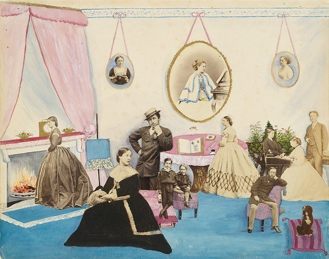
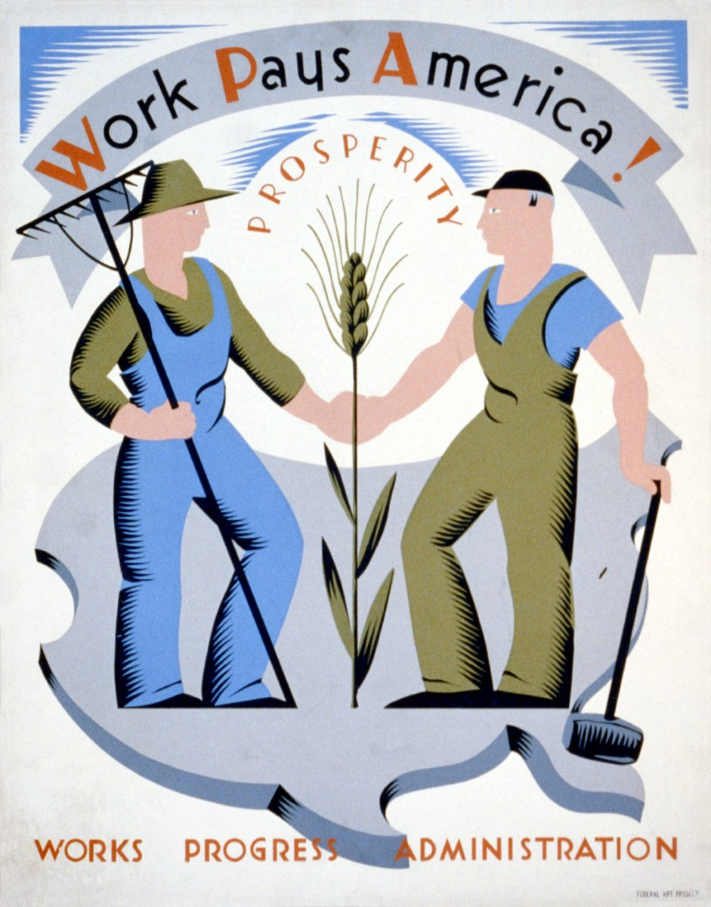
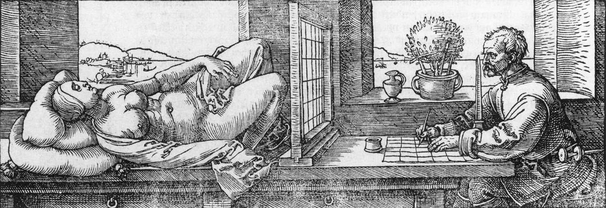
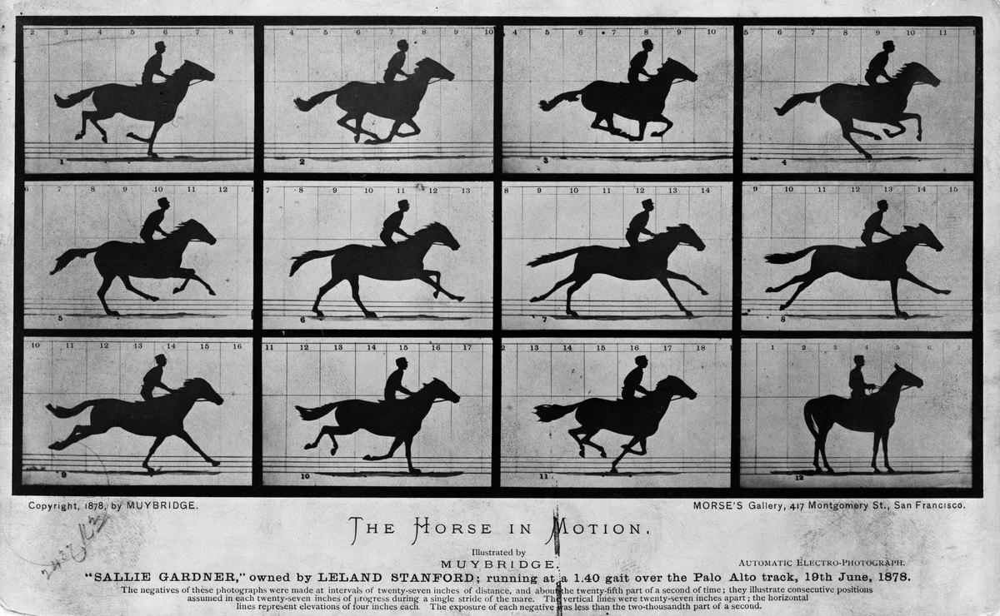

What does it mean to make one piece of work that is truly your best, and to explain why it works?
This year you have worked in photo editing, collage, typography, drawing, and animation, all inside Pixlr E. In this module you choose one of those mediums and build one finished piece: the piece you want in your portfolio when this course ends. No new technique to learn. Your job now is to use what you already know on purpose, and to say clearly why you made the choices you did.
👀 PART 1 · LOOK FIRST
Before you choose, look at the full menu of what you have learned to make this year. Each of these five mediums lived in its own module. For the final project you pick just one.
Photo EditAdjustments, blend modes, retouching
NASA, ESA, Hubble Heritage Team, Pillars of Creation, 2014. Public domain. Source

CollageCut-out, photomontage, surrealism, Dada
Mary Georgiana Caroline, Lady Filmer, untitled album page, mid-1860s. Public domain. Source

Typography PosterType as image, hierarchy, layout
Vera Bock, Work Pays America! Prosperity, WPA Federal Art Project, 1936–1941. Public domain (U.S. federal work). Source

DrawingPerspective, mosaic, notan
Albrecht Dürer, Draughtsman Drawing a Recumbent Woman, 1525. Woodcut. Public domain. Source

AnimationFrames in Pixlr E, assembled into a GIF
Eadweard Muybridge, The Horse in Motion, 1878. Public domain. Source
Real examples of each medium. All five mediums are built in Pixlr E; animation also uses a free browser GIF tool, as in Modules 29 and 30.
💭 QUICK CHECK-IN · NO WRONG ANSWER
Looking back over the year, which medium are you leaning toward for your final project, and why?
📚 PART 2 · THE PROJECT BRIEF
Here is the whole assignment in three parts.
1. Choose one medium
Pick ONE: photo edit, collage, typography poster, drawing, or animation. Choose based on what you learned in Part 1, either a medium you already enjoy or one you want to get better at.
2. Build one polished piece
Produce one finished piece in your chosen medium, built in Pixlr E. If you choose animation, build your frames in Pixlr E and assemble the GIF using a free browser GIF tool, the same workflow from Modules 29 and 30. This is not a new technique. It is your best use of a technique you already know.
3. Write an artist statement
Write a short statement connecting your piece to specific Elements of Art and Principles of Design you used on purpose. Name at least two, and explain the choice, not just the label. "I used color" is a label. "I used a narrow, cool color palette so the piece would feel calm even though the subject is busy" is a choice explained.
💡 CHOOSING A MEDIUM
There is no wrong choice here. Playing to a strength lets you push further into skill you already have. Stretching into a medium you found harder this year builds a skill you have not proven yet. Both are legitimate reasons to choose. What matters is that you can explain why you chose it.
Before you open Pixlr E, answer these four planning questions. You will submit your answers as this module's planning assignment.
1. Medium and reason
What medium am I choosing, and why this one?
2. Subject or concept
What is my subject or concept for this piece?
3. Elements and principles
Which two or more Elements of Art or Principles of Design will I feature on purpose?
4. Definition of done
What would "my best work" look like when I am finished?
5. Career connection
What job or field uses the medium you chose?
This is a real planning tool, not a formality. Artists who plan before they build spend less time undoing decisions later.
🎨 GIVE IT REAL TIME
A final piece rushed in one sitting looks like a final piece rushed in one sitting. Build it, step away, come back, and revise. Look at it again the next day if you can. The extra pass is usually where the piece actually improves.
🔍 PART 3 · SELF-ASSESSMENT BEFORE YOU SUBMIT
Your final project is graded on the same four criteria as every project this year: understanding of tools, quality of choices, craftsmanship, and intellectual honesty. Ask yourself these questions before you submit so nothing on the rubric is a surprise.
Understanding of the tools
Did I use the tools of my chosen medium correctly, the way they are meant to work in Pixlr E?
Quality of choices
Can I point to at least two specific decisions in the piece and explain why I made them, rather than where things happened to land? An intentional choice is one you can defend; an accident is one you cannot.
Craftsmanship
Is the piece finished and clean, exported correctly, free of stray edges or unfinished sections?
Intellectual honesty
Is this genuinely my work, signed and dated, and does my artist statement describe my own real reasoning rather than a generic description that could belong to anyone's piece?
⚡ TRY IT · STRONG SELF-ASSESSMENT OR NOT?
Read each case, decide, then check your answer.
An artist statement says: "I used color and shape in my piece." Is this a strong artist statement?
What separates an intentional choice from an accident in a finished piece?
⚠️ WORTH KNOWING · AI AND YOUR FINAL PROJECT
An AI tool can help you brainstorm a subject or concept before you start. It cannot make the compositional decisions this project is grading: which elements and principles you feature, how you arrange them, and why. Your artist statement has to describe your own reasoning about your own choices; generic or AI-written language in the statement will not reflect the thinking this assignment is checking for.
📝 VOCABULARY
Artist StatementA short written explanation connecting a finished piece to the specific choices the artist made.
Intentional ChoiceA decision in a piece the artist can explain and defend, as opposed to an accident.
MediumThe specific type of work chosen for a piece, such as photo edit, collage, typography, drawing, or animation.
Elements of ArtThe basic visual building blocks of an artwork, such as line, shape, color, and space.
Principles of DesignThe ways those building blocks are organized, such as balance, contrast, and emphasis.
Portfolio PieceA finished work chosen to represent an artist's skill and voice to an outside viewer.
CraftsmanshipThe care and skill shown in how cleanly and completely a piece is finished.
➡️ WHAT YOU'LL DO NEXT (IN CANVAS)
1
Module 31.01 Mini Lesson: Final Project Planning Scaffold
Answer the planning questions from Part 2 and submit before you start building. Completion grade.
2
Module 31.02 Discussion: Choices You Can Defend
Post your medium and an explained choice from your piece, then reply to one classmate.
3
Module 31.03 Quiz: Final Project Readiness
Auto-graded in Canvas, covering what a strong artist statement includes and what the self-assessment checklist checks for.
4
Module 31.04 Studio Project & Reflection: Final Project
Submit your polished piece in your chosen medium plus your written artist statement and a short reflection. Your graded artwork this module.
💪 THE BIG IDEA
In Module 1 you learned that a human artist is always the one making the decisions behind a digital tool. In this module you prove it. Nobody is assigning you a medium, a subject, or a set of steps to follow. You are choosing all of it, and then you are standing behind that choice in writing. That is what it means to own a piece of work: not that it is perfect, but that you can say exactly why it is yours.
Optima Academy Online · DIGITAL ART IMAGING · Quarter 4 · Student Lesson Page
Module 31 · Final Project: Your Choice, Your Best Work